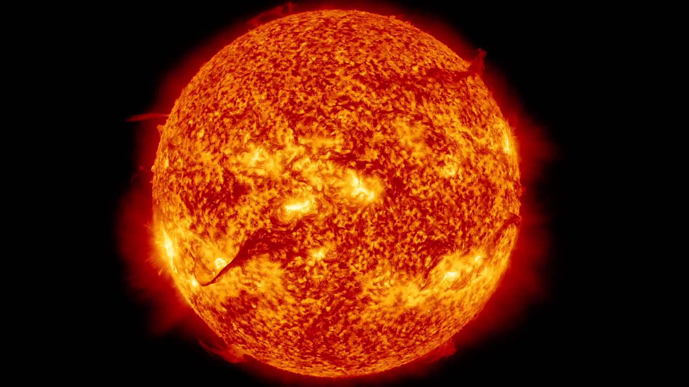
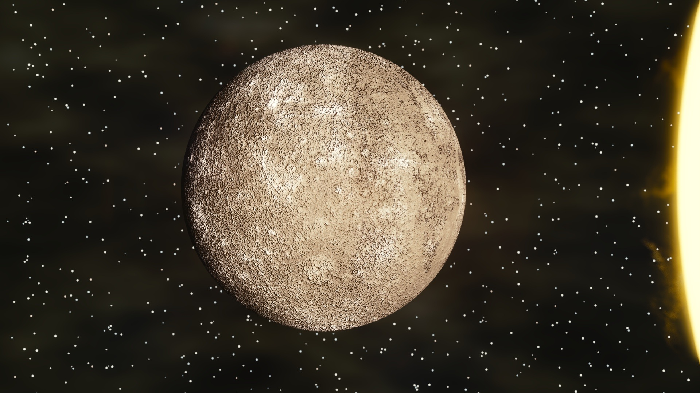
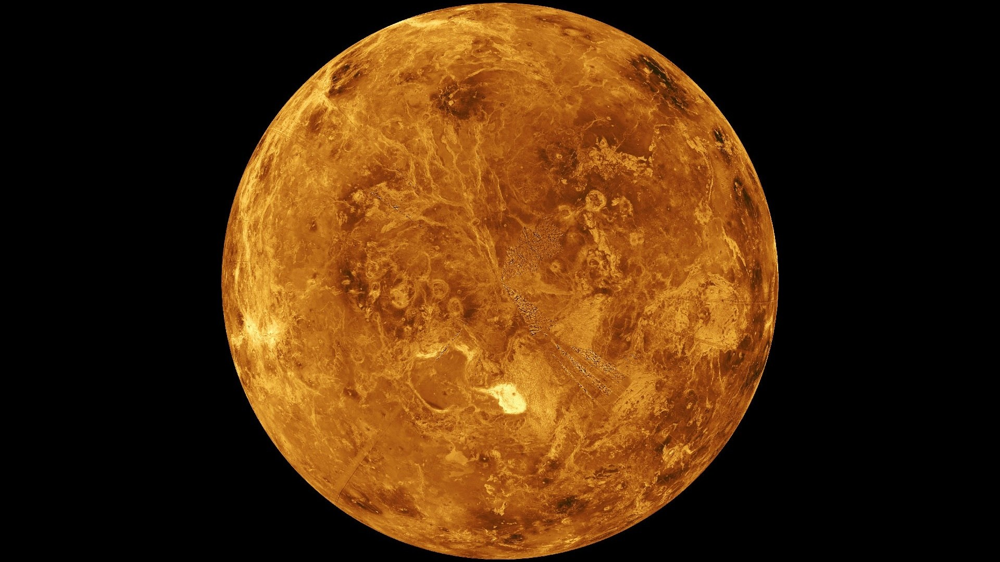
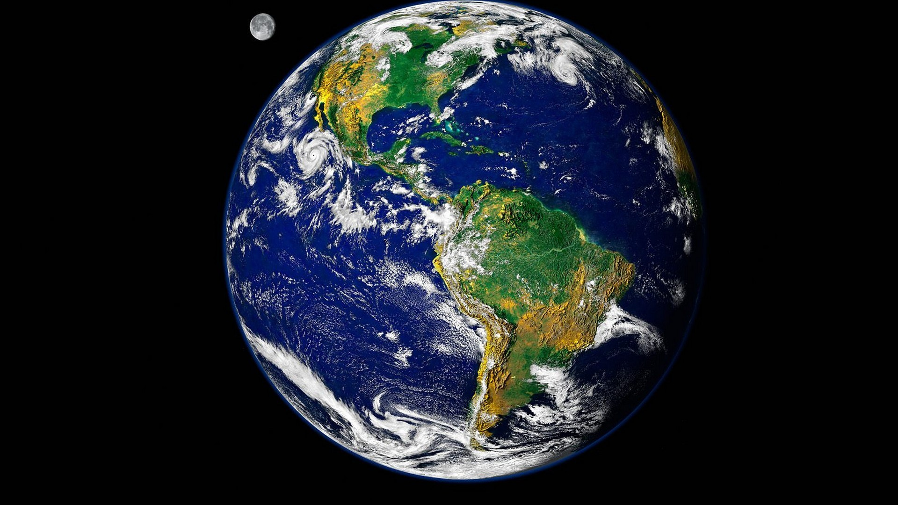
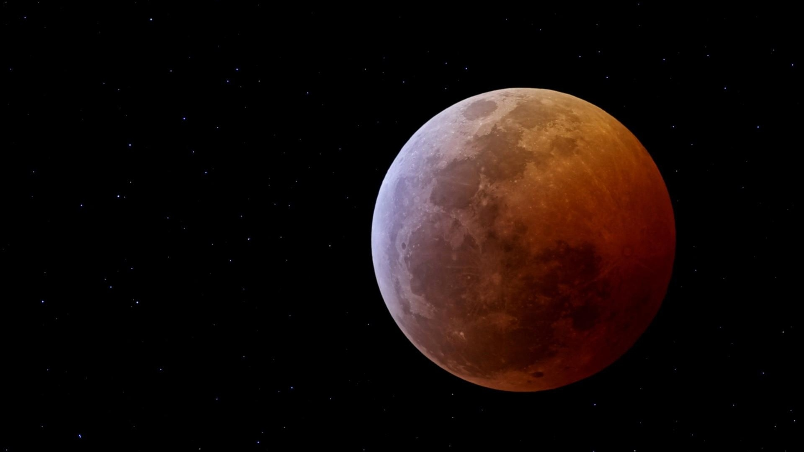
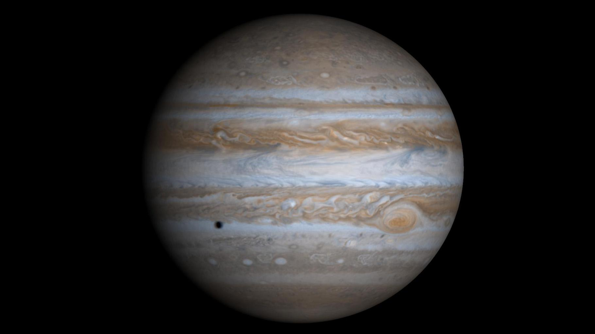
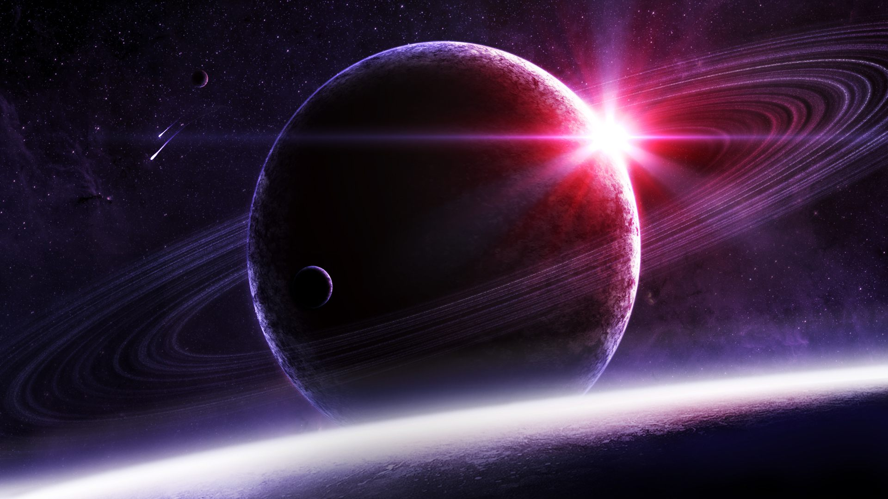
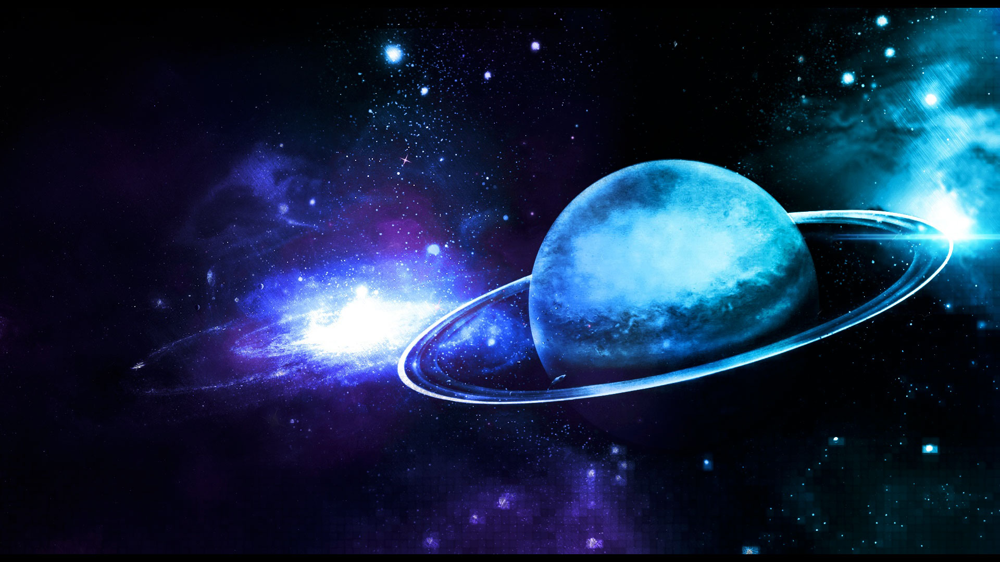
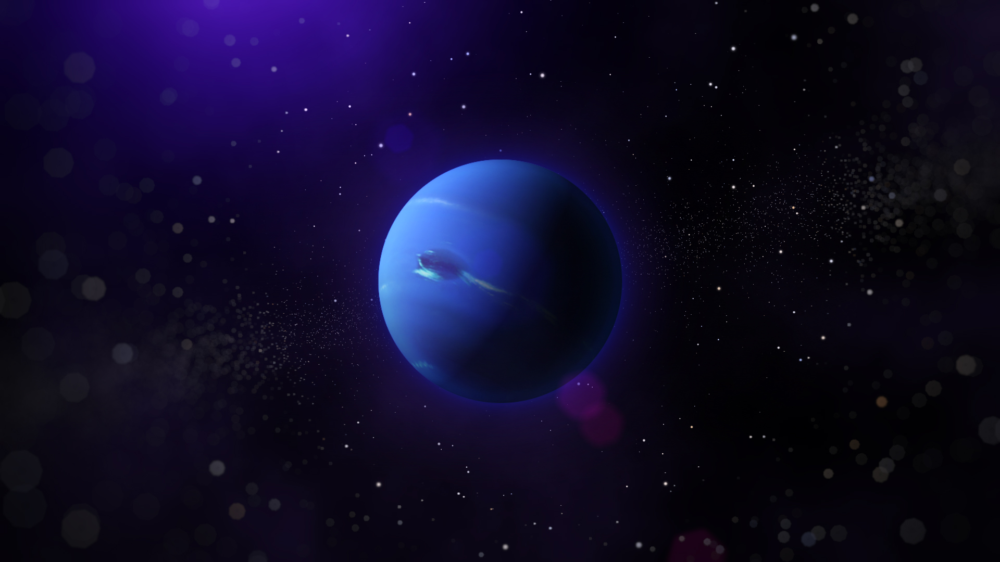

SOARELE
Soarele este centrul sistemului solar. Acesta este de 740 de ori mai mare decât toate planetele la un loc. Masa sa enormă este responsabilă de forţa gravitaţională ce face ca toate planetele sistemului nostru solar să graviteze în jurul lui. Compoziţia Soarelui este de 74% hidrogen, iar 25% heliu, această compoziţie făcând ca Soarele să nu fie solid, materia solară fiind plasma. Temperatura la suprafaţa Soarelui este de aproximativ 5000 grade Celsius. Vârsta Soarelui este de circa 4,5 miliarde ani. Acesta se roteşte în jurul centrului galaxiei noastre, Calea Lactee, faţă de care se află la distanţa de 25-28 de mii de ani lumină, realizând o mişcare o revoluţie în aproximativ. 225-250 de milioane de ani. Viteza orbitală este de 220 km/s .Volumul Soarelui ar putea cuprinde 1.300.000 de planete de dimensiunea Pământului. Forţa gravitaţională este de aproximativ 28 de ori mai puternică decât cea terestră.
In trecut, oamenii credeau ca Soarele este o bila de foc pusa pe cer de catre zei.
Soarele are o forma sferica aproape perfecta.
Desi pare ca sta pe loc, Soarele, la fel ca orice corp ceresc, se invarte; acesta se executa o rotatie completa in jurul propriei axe in 26 de zile.

Mercur
Mercur, cea mai apropiată planetă de Soare, se află la 0,38 DPS de Soare. Numele vine de la zeul comerţului la romani, Mercur. Efectuează o rotaţie completă în jurul axei sale în 58 de zile pământene, iar o rotaţie în jurul Soarelui în aproximativ 88 de zile. Pentru că masa planetei Mercur este de numai 5,5% din masa Pământului şi forţa de atracţie gravitaţională este mult mai mică. Astfel, dacă am poposi pe această planetă, ne-am simţi mult mai uşori. Temperatura variază enorm de la zi la noapte, întrucât Mercur nu are o atmosferă precum Pământul; temperaturile ziua ajung la 420 grade C, iar noaptea până la -173 grade Celsius.
Mercur executa o rotatie completa in jurul Soarelui in 88 de zile, deplasandu-se pe orbita cu o viteza de aproximativ 50 km/s, fiind cea mai rapida planeta din Sistemul Solar.

Venus
Venus este a doua planetă, vecina noastră în sistemul solar. Se află la 0,72 DPS de Soare. Planeta este acoperită cu nori din acid sulfuric, iar efectul de seră cauzat de procentul mare de bioxid de carbon duce la temperaturi mai mari decât cele întâlnite pe Mercur, deşi este Venus este mai departe de Soare. Ziua durează 243 de zile, iar rotaţia în jurul Soarelui durează, ciudat pentru un pământean, 225 de zile. Venus se roteşte în jurul axei sale de la est la vest, spre deosebire de Pământ, care se roteşte de la vest la est. Masa planetei este de 81% din masa Pământului, din acest motiv valoarea acceleraţiei gravitaţionale este 0,9 x acceleraţia gravitaţională a Pământului.
Venus este cea mai fierbinte planeta din Sistemul Solar, cu temperaturi ce ajung pana la 480 de grade Celsius.

Pamant
Pământul este a treia planetă de la Soare. Are un diametru la Ecuator de 12.756 Km. Pământul face o rotaţie completă în jurul axei sale în 23,93 ore. O rotaţie de revoluţie durează 365,256 zile, din acest motiv este necesară o ajustare a duratei anului din când în când, pentru ca anul calculat de ceasurile noastre să se potrivească cu anul real, cauzat de mişcarea planetei în jurul Soarelui. Viteza de deplasare a Pământului în jurul Soarelui este de 107.244 Km/h. Acceleraţia gravitaţională la nivelul solului este de 9,78 m/s2, aceasta scăzând odată cu depărtarea de suprafaţa terestră. Pentru a citi mai multe despre atmosfera terestră, citi acest articol.
Pamantul creste cu 1cm la fiecare 100 de ani din cauza prafului stelar.
Pamantul are 2 luni care il orbiteaza.Cea de-a doua este asteroidul 3753.El a fost descoperit in 1986 si a fost denumit "cel mai ciudat companion al Terrei".

Marte
Marte, planeta roşie, se află la 1,52 DPS de soare. Este planeta care a stârnit cele mai mari speranţe ale cercetătorilor legate de existenţa vieţii. După mai multe luări de probe de pe Marte, sunt opinii care susţin existenţa vieţii şi opinii care, dimpotrivă, afirmă lipsa dovezilor concludente. Ziua marţiană este de 1,02 zile pământene, iar mişcare în jurul Soarelui durează 686 zile. Temperatura de pe Marte variază de la un maxim de 20 grade Celsius la -140 C. Marte are doi sateliţi, Phobos şi Deimos.
Atmosfera martiana este foarte subtire si este formata in mare parte din dioxid de carbon (96%).

Jupiter
Jupiter este la 5,2 DPS distanţă de Soare. Este cea mai mare planetă din sistemul nostru solar, având un diametru de 11 ori mai mare decât al Pământului. Din cauza dimensiunilor deosebite ale planetei Jupiter, Pământul beneficiază de o bună protecţie, mare parte din obiectele cosmice ce s-ar îndrepta spre Pământ fiind oprite de Jupiter. Suprafaţa planetei este măturată de vânturi puternice, cu vânt de peste 150 Km/s. Temperatura medie este de -121 grade Celsius. Jupiter are 16 sateliţi, dintre care cel denumit Europa adăposteşte apă, acesta fiind un important indiciu pentru prezenţa vieţii. Mişcarea în jurul axei sale durează 0,4 zile terestre, iar mişcarea de revoluţie 11,9 ani pământeni.
Jupiter este de 318 ori mai mare decat Pamantul si are un volum de 1,321 de ori mai mare; desi este gigant in comparatie cu Pamantul, Jupiter are doar o cincime din densitatea acestuia datorita compozitiei.
Temperatura medie la suprafata lui Jupiter este de -145 de grade Celsius

Saturn
Saturn, a şasea planetă a sistemului solar, este situată la 9,5 DPS de Soare. Este a doua planetă ca mărime, după Jupiter, fiind de mai bine de 9 ori mai mare decât Pământul. Vânturile puternice sunt proprii şi acestei planete, viteza acestora ajungând la 500 Km/h. Saturn se distinge prin sistemul său de inele, descoperit de Galileo Galilei. Planeta are 18 sateliţi. Saturn se roteşte în jurul axei sale în 0,4 zile terestre, iar mişcarea de revoluţie durează 29, 4 de ani pământeni.
Saturn este denumita dupa zeul roman Saturnus, echivalentul lui Kronos, tatal lui Zeus; de la acelasi nume avem si denumirea zilei de sambata.
Saturn este cea mai indepartata planeta vizibila de pe Pamant cu ochiul liber

Uranus
Uranus este a treia planetă ca dimensiune a sistemului solar şi se află la 19,2 DPS de Soare. Este de patru ori mai mare decât Pământul. Furtunile sunt obişnuite şi pe această planetă, ca şi pe ultimele două de mai sus, iar temperatura medie este de -190 grade Celsius. O zi pe Uranus durează 0,7 zile terestre, iar mişcarea de rotaţie în jurul Soarelui are durata de 83,7 ani pământeni. Uranus are cel puţin 15 sateliţi.
Uranus a fost numita dupa zeul grec al cerurilor.
O zi pe Uranus dureaza 17 ore, iar o rotatie completa in jurul Soarelui (un an) are loc in 84 de ani.

Neptun
Neptun, ultima planetă, dacă nu luăm în calcul şi planeta pitică Pluto, este la 30 DPS de Soare. şi această planetă este mai mare decât Pământul, având un diametru de 3,8 diametre terestre. Cele mai puternice vânturi din sistemul nostru solar sunt de întâlnit aici, cu vânturi ce ating 2000 Km/h. Temperatura medie este de aproximativ -200 grade Celsius. Neptun are 8 sateliţi şi patru inele înguste. Ziua durează 0,6 zile pământene, iar o mişcare completă în jurul Soarelui ţine 163,7 ani tereştri.
Distanta medie de la Neptun la Soare este de 4.503.443.661 km, fiind de aproximativ 30 de ori mai departe decat Pamantul.
Mulţi dintre noi au învăţat la şcoală şi despre Pluto ca fiind cea mai îndepărtată şi mai mică dintre planete. Pluto a fost trecută în rândul planetelor pitice. O planetă pitică este un corp ceresc prea mic pentru a fi considerat o planetă, dar în schimb suficient de mare pentru a nu fi înregistrat ca un simplu asteroid. O planetă pitică trebuie să execute o mişcare de revoluţie în jurul Soarelui şi nu poate fi satelitul unei alte planete.
Planeta pitică Pluto
Pluto are un diametru de numai 0,18 din diametrul terestru. Se află la 40 DPS de Soare. Această planetă pitică a fost descoperită în 1930 de Clyde Tombaugh. Rotaţia în jurul propriei axe durează 6,4 zile terestre. Temperatura medie este de -170 grade Celsius. Pluto are un satelit, Charon, de două ori mai mic.
Pe lângă cele 8 planete enumerate mai sus Asociaţia Astronomică Internaţională a stabilit că mai există un număr de cinci plante pitice. Acestea sunt: Eris (descoperită în 2003), Ceres (văzută pentru prima dată în 1801), Haumea (descoperită în 2004), Makemake (descoperită în 2005) şi Pluto (1929).